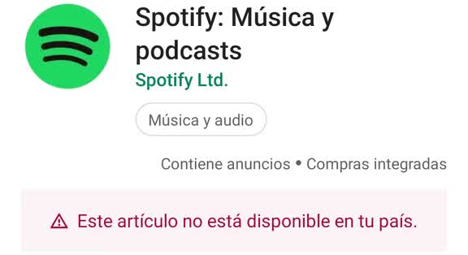

Hoy en dia muchas personas utilizan aplicaciones de stram para sus musicas, esta bien, es facil… El problema esta cuando estas empresas de un dia para otro dejan de dar soporte a un Pais entero… Ya no te dejan descargar… Esto es poco comun e impredecible, puede suceder cuando la empresa quiera… Lo que normalmente se ve son Musicas que perdieron las licencias en ciertos paises.
